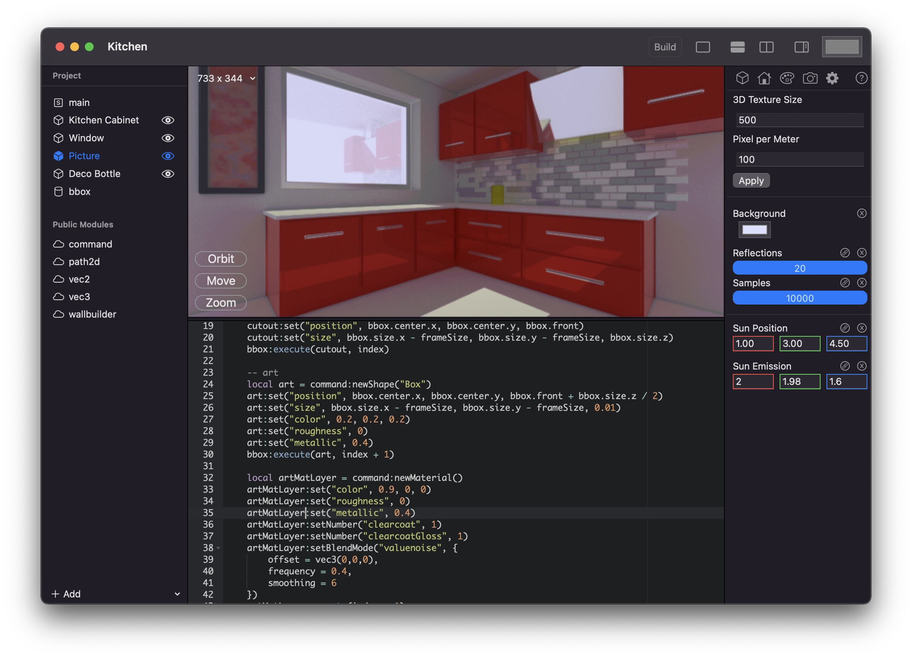

Signed is a Lua based 3D modeling language, it provides a unique way to create high quality 3D content for your game or visualization.
Artist driven workflows of the major 3D editing packages are great, for artists. Developers still have a hard time creating high quality content for their games and Signed hopes to fill this gap.
Signed itself is a development language, but it will over time provide tools to dynamically visualize for example paths and areas while typing.
Signed will be available for macOS and iPad OS and is heavily optimized for Metal.